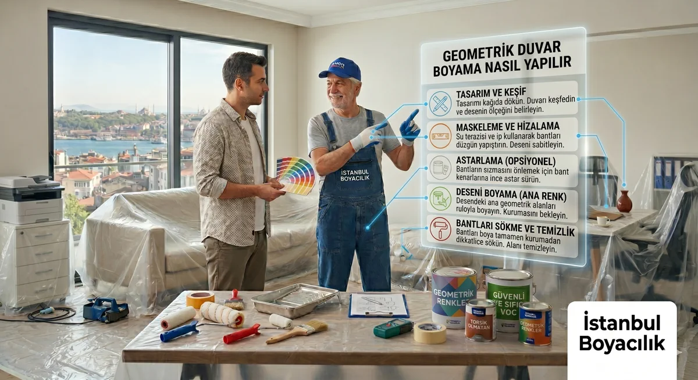

Geometrik Duvar Boyama Nasıl Yapılır? Adım Adım Rehber

Geometrik desenli duvarlar, sade bir odayı görsel olarak zenginleştirir ve kişilik katar. Bantlama tekniğiyle uygulanan üçgen, baklava, chevron ve şerit desenleri hem profesyoneller hem de dikkatli bir DIY uygulamasıyla gerçekleştirilebilir. Doğru planlama ve teknik bu sürecin anahtarıdır.
Geometrik Duvar Boyama Desen Türleri
| Desen | Zorluk | Etki | Uygun Oda |
|---|---|---|---|
| Dikey / yatay şeritler | Kolay | Yükseklik veya genişlik hissi | Her oda |
| Chevron (kırlangıç kuyruğu) | Orta | Dinamik, enerjik | Yatak odası, genç odası |
| Üçgen mozaik | Orta | Modern, sanatsal | Salon, koridor |
| Baklava (elmas) | Orta | Klasik zarafet | Yemek odası, koridor |
| Heksagon (altıgen) | Zor | Mimari, özgün | Banyo, ofis |
| Ombre geometrik | Zor | Sanatsal, benzersiz | Özel alan / aksan duvar |
Gerekli Malzemeler
- Düz kesimli boya bandı: Standart masking tape değil, boyacı duvar bandı kullanın (örn. Scotch Blue, FrogTape).
- Şeffaf plastik örtü: Yer ve mobilya koruması.
- Rulo ve fırça: Dar alanlar için küçük fırça şart.
- Kalem ve cetvel: Desen çizimi için; uzun metal cetvel veya şerit metre.
- Su terazisi (nivou): Yatay ve dikey çizgilerin dik olması için.
- Boya: Ana renk + aksan renk (en az 2 farklı ton).
- Astar: Yüzey hazırlığı gerekiyorsa.
Adım Adım Uygulama: Şerit Desen
Şeritler geometrik boyamaya en iyi başlangıç noktasıdır. Hem görsel etkisi güçlüdür hem de uygulama hataları kolayca telafi edilebilir.
- Duvarı taban renge boyayın ve tamamen kurumasını bekleyin (su bazlı boya: min. 4 saat). Bu adımı atlamak en sık yapılan hatadır.
- Şerit genişliğini belirleyin (genellikle 15–25 cm). Duvar genişliğini bu ölçüye bölerek şerit sayısını hesaplayın.
- Su terazisi yardımıyla kalemle hafif işaretler yapın. Her şeridin başlangıç ve bitiş noktasını işaretlemek süreklilik sağlar.
- Boya bandını işaret noktaları boyunca yapıştırın. Bandı sıkıca bastırarak kenarlarda boya sızmasını önleyin.
- Aksan rengi ile bantlı alana boya sürün. İnce bir kat yeterlidir; kalın uygulama band kenarından taşabilir.
- Boya hafif kurumaya başlarken (yapışkan ama ıslak değilken) bandı yavaşça sökün. Tamamen kuruyunca sökmek kenarların kalkmasına neden olabilir.
- Gerekirse ince bir fırçayla kenarları düzeltin.
Üçgen Mozaik Desen: Teknik Detaylar
Üçgen deseni şeritlerden daha karmaşıktır ancak sonuç çok daha çarpıcıdır. Köşelerin tam olarak buluşması kritiktir.
Planlama Aşaması
Önce kağıda duvar oranında bir taslak çizin. Üçgen boyutlarını ve renklerini belirleyin. Komşu üçgenlerin renklerini seçerken zıt tonlar (açık–koyu) net bir ayrım sağlar; benzer tonlar ise daha soft bir etki yaratır.
Bantlama Tekniği
Her üçgen için bant çizgileri üç farklı açıdan kesişmelidir. Kesişme noktalarında bantları birbirinin üzerine bindirin; bu noktalarda ince fırçayla elle düzeltme yapmanız gerekebilir.
Chevron (Zikzak) Desen
Chevron desen, V biçimli birleşen paralel çizgilerden oluşur. Klasik zikzaktan farkı V'nin tam ortada buluşmasıdır. Uygulamada şu tekniğe dikkat edin:
- Duvarın tam ortasını belirleyin — bu chevron'un tepe noktasıdır.
- Bu noktadan sola ve sağa eşit açıda çizgiler çizin.
- Her satırda aynı açı ve yükseklik değişimini koruyun.
- Her V için bant uygulamak zahmetlidir; profesyonel uygulamada şablonlar kullanılabilir.
Geometrik Boyama: Kendin Yap mı, Usta mı?
| Durum | Önerilen Yaklaşım |
|---|---|
| Basit şerit veya 2 renk desen | DIY uygulanabilir — dikkatli bantlama ile |
| Üçgen, baklava, chevron deseni | Profesyonel uygulama tercih edilmeli |
| Hassas renk geçişleri (ombre geometrik) | Mutlaka profesyonel uygulama |
| Yüksek tavan, büyük alan | Profesyonel güvenlik ve ekipman gerektirir |
Geometrik Duvar Boyama Fiyatları (2026)
Profesyonel geometrik duvar boyaması standart düz boyamadan daha maliyetlidir; çünkü planlama, bantlama ve kuruma süreleri ek iş gücü gerektirir.
| Desen Türü | Ortalama Fiyat (tek duvar) |
|---|---|
| Şerit desen (2 renk) | 1.200 – 2.500 TL |
| Chevron / baklava | 2.500 – 4.500 TL |
| Üçgen mozaik | 3.000 – 6.000 TL |
| Çok renkli karmaşık desen | Keşif ile belirlenir |
İlgili Yazılar ve Sayfalar:
Accent wall fikirleri ve örnekler | Eskitme ve vintage boya teknikleri
Dekoratif boyama hizmetleri: Kadıköy, Beşiktaş, Ataşehir, Bakırköy
Sık Sorulan Sorular
Geometrik veya Dekoratif Boyama İçin Teklif Alın
Özgün dekoratif boya uygulamaları için İstanbul geneli hizmet veriyoruz. Ücretsiz keşif için bize ulaşın.